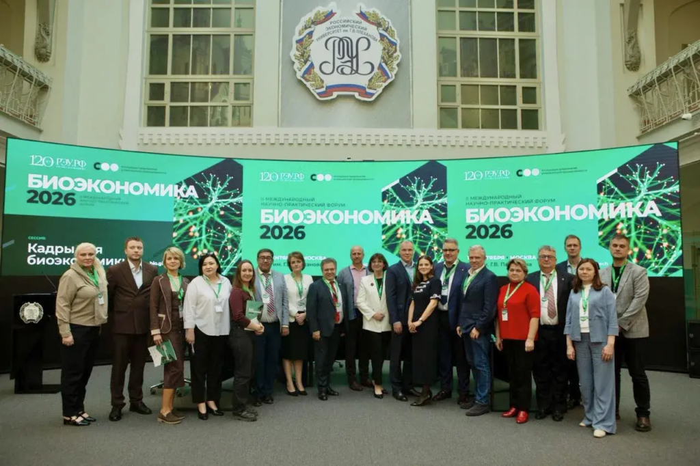
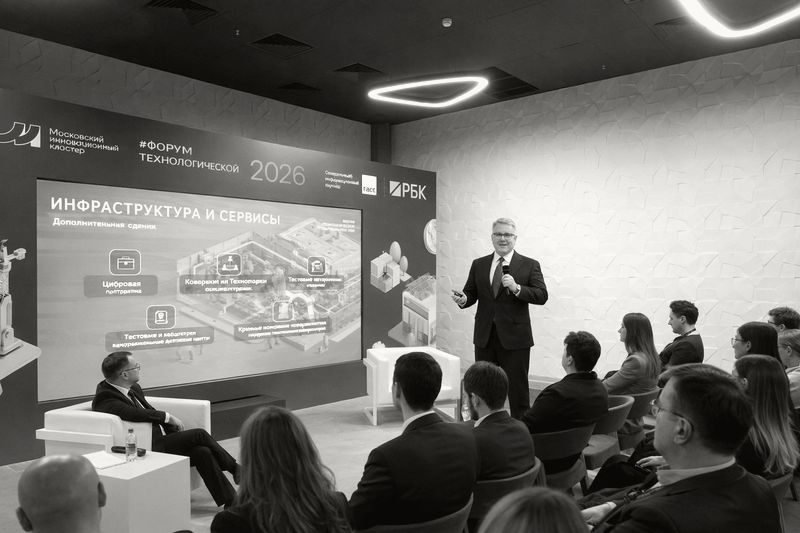
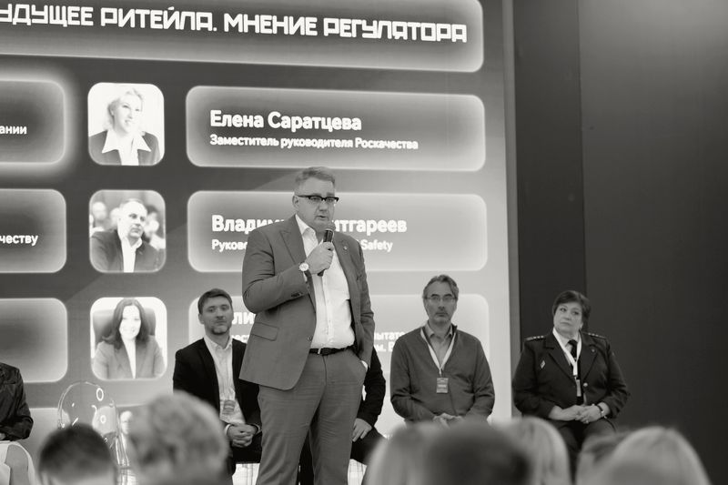
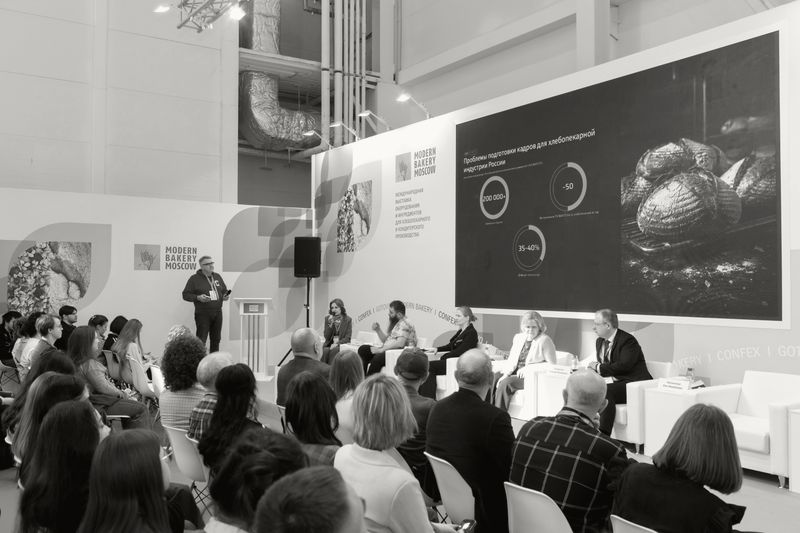
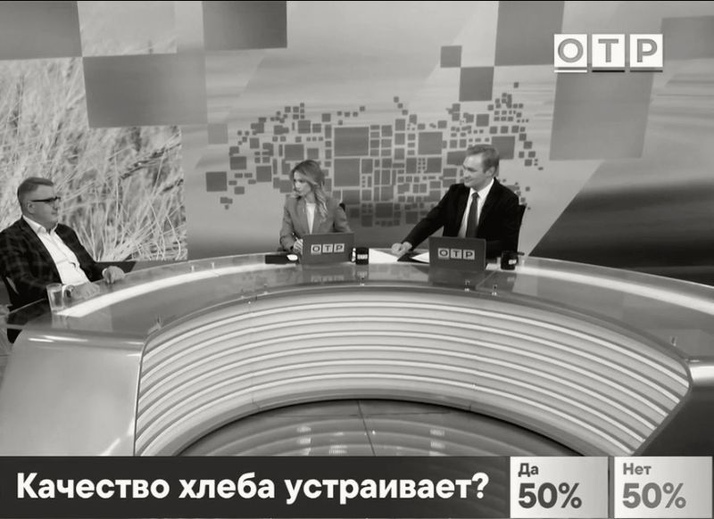
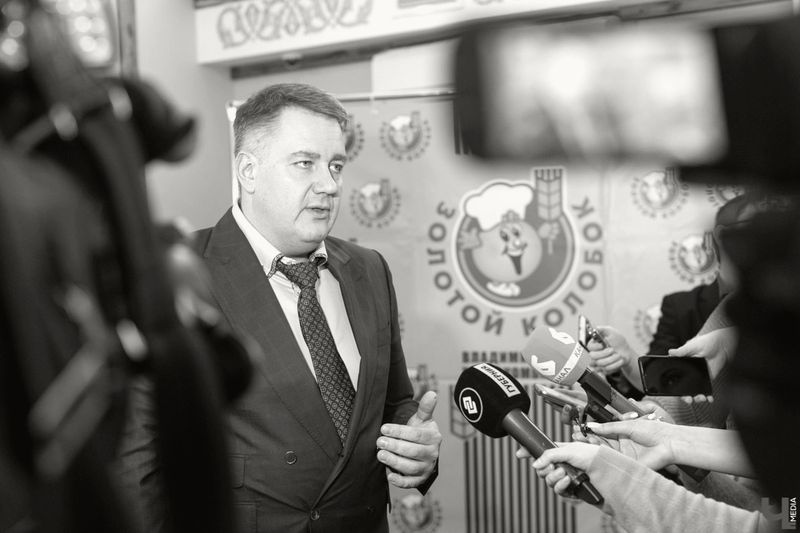
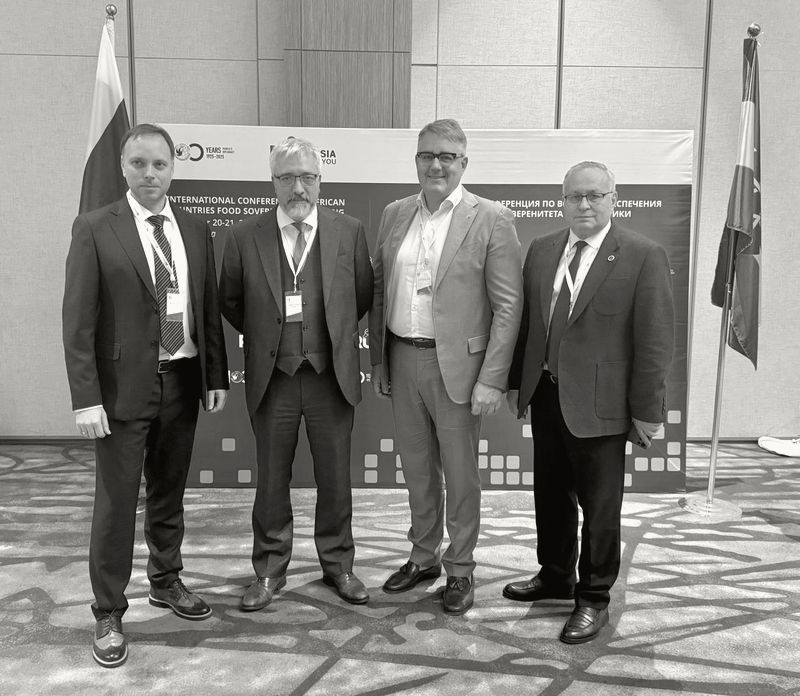

Стратегический маркетинг
Рынок и потребитель, портфель, цена и каналы в единой логике прибыльного роста.
Карта маркетинговых решений: приоритеты роста, ресурсная логика, сценарии и план проверки гипотез на 90 дней.
Посмотреть программу →Авторские программы Олега Омельченко
Для руководителей, которые принимают решения о рынке, команде и экономике предприятия. Работа с задачами вашей компании и планом их применения.
Университетам: система трансфера технологий →Два направления для руководителей
Учебная работа строится вокруг решения, которое предстоит принять вам и вашей команде.
Рынок и потребитель, портфель, цена и каналы в единой логике прибыльного роста.
Стратегия, экономика предприятия, управленческая команда и исполнение решений.
Отдельная программа
Цели владельца, следующий этап бизнеса и модель контроля.
Метод работы
Контекст, факты, данные и управленческие ограничения.
Альтернативы, экономика, допущения и критерии выбора.
Разбор проекта, обратная связь и уточнение гипотез.
Приоритеты, ответственные, сроки и показатели контроля.
Экспертиза автора
Кандидат экономических наук, доцент, MBA. Преподавательская работа связана с НИТУ МИСИС и РЭУ им. Г.В. Плеханова. Экспертный фокус: управление, коммерциализация и трансфер технологий.
Об Олеге, исследованиях и практике ↗Программы для топ-руководителей
Два самостоятельных направления для руководителей FMCG. Корпоративная адаптация и открытая группа обсуждаются как форматы участия.
Программа для руководителей
Где расти и почему клиент выберет вас
Для генеральных, коммерческих и маркетинговых директоров, руководителей бизнес-направлений FMCG.
Проверяем диагноз, осознанный выбор, механизм роста, ограничения и согласованность действий. Разбираем текущий проект по единой рубрике.
Рабочий результат: Первичная оценка стратегии и перечень решений для пересмотра.
Практика с ИИ: ИИ ищет разрывы в аргументации и предлагает альтернативные объяснения; участник проверяет их по источникам.
Сопоставляем потребительские задачи, ситуации входа в категорию, проникновение, частоту и ценность покупки. Проверяем две приоритетные гипотезы.
Рабочий результат: Карта источников роста и план проверки двух гипотез.
Практика с ИИ: ИИ группирует разрешённые отзывы и интервью со ссылкой на исходный фрагмент. Синтетический потребитель не подтверждает спрос.
Сравниваем простой сезонный прогноз и подготовленные результаты ML-модели на отложенном по времени периоде. Разбираем смещение, промо, отсутствие товара и утечку данных.
Рабочий результат: Доказательный диагноз и паспорт аналитической задачи.
Практика с ИИ: Практикум по интерпретации модели: где она полезна, где ошибается и когда нужен простой прогноз.
Связываем задачу бренда с аудиторией, креативом, охватом, частотой и результатом. Готовим сценарий замены подорожавшего или недоступного канала.
Рабочий результат: Медиапортфель и правила пересмотра распределения ресурсов.
Практика с ИИ: ИИ помогает подготовить варианты креативного брифа и проверить согласованность сообщений. Факты, права и требования к размещению проверяют специалисты.
Определяем роли брендов, границы расширения и критерии отдельного запуска. Проверяем потребительскую логику, дистрибуцию и экономику предложения.
Рабочий результат: Карта ролей брендов и критерии решения по расширению.
Практика с ИИ: ИИ структурирует аргументы за и против запуска. Выводы опираются на реальные исследования и согласованные данные.
Сопоставляем цену за единицу, упаковку и ценность. Считаем сценарии с учётом перетока между собственными SKU и ограничений оценки эластичности.
Рабочий результат: Ценностно-ценовая карта, сценарий портфеля и проверка каннибализации.
Практика с ИИ: Работаем с подготовленными модельными сценариями. Коэффициент прогнозной модели сам по себе не доказывает причинный эффект цены.
Связываем 5–7 KPI с механизмом роста. Сопоставляем контрольный эксперимент, маркетинг-микс-моделирование и платформенную атрибуцию.
Рабочий результат: План измерения, дизайн теста и критерии масштабирования.
Практика с ИИ: ИИ проверяет полноту плана эксперимента. Платформенный ROAS не заменяет оценку дополнительного эффекта.
Собираем стратегию на одной странице, доказательное приложение и план первых 90 дней. Заранее разбираем причины возможного провала.
Рабочий результат: Проект стратегии, реестр допущений и условия пересмотра.
Практика с ИИ: ИИ выступает оппонентом: ищет противоречия и предлагает неблагоприятные сценарии. Ответственность за выбор остаётся у команды.
Согласуем структуру стратегии, требования к доказательствам и правила оценки. Участники защищают доработанные проекты и получают следующий шаг.
Рабочий результат: Общий шаблон стратегии, оценочная рубрика и индивидуальный план доработки.
Практика с ИИ: ИИ помогает подготовиться к вопросам и проверить комплектность материалов. Итоговую оценку дают ведущий и уполномоченные руководители.
Возможная конфигурация: три учебных дня по 8 академических часов и защита на 4 академических часа через 4–6 недель. Итого 28 академических часов, или 21 обычный час без перерывов. Подготовка и самостоятельная доработка учитываются отдельно. Размер группы и объём защиты согласуются.
Выбрать модули для команды ↗Программа для руководителей
Соединить потребителя, полку и прибыль
Для генеральных и коммерческих директоров, руководителей предприятий, категорий и бизнес-единиц FMCG.
Авторская архитектура программ разработана с учётом структуры executive education. Упоминание школ не означает партнёрства, аккредитации или использования их учебных материалов. Проверено 6 октября 2026 года.
Собственники, топ-менеджеры, руководители маркетинга и продаж
Ориентир: Поведенческий маркетинг; изменение выбора и работа с данными; практическое воздействие на клиентский опыт; итоговый проект
Онлайн: эфиры, проектный трек, самостоятельная работа · 4 модуля, 8 недель
Руководители, собственники и команды руководитель + ответственный за бренд
Ориентир: Современный бренд-менеджмент; бренд во внешних изменениях бизнеса; бренд во внутренних изменениях
Очно на кампусе; кейсы и обратная связь · 3 дня, 27 часов
Предприниматели и первые лица действующих компаний
Ориентир: 6 очных модулей; первый модуль называется «Рынок»; содержание адаптируется к группе; индивидуальный межмодульный трек
Очные модули на кампусе и работа со своим бизнесом между ними · 6 месяцев; 6 модулей по 5 дней
Старшие маркетинговые руководители, генеральные менеджеры, предприниматели и руководители продаж, отвечающие за рост
Ориентир: Ценность и соответствие рынку; конкуренты; бренд-портфель; digital/AI; согласование маркетинговых решений
Очно на кампусе HBS, кейсы и учебные группы · 6 дней плюс 12–15 часов подготовки
Руководители разных функций, в том числе не маркетологи, получившие ответственность за маркетинг, планирование и новые продукты
Ориентир: Позиционирование; клиентское поведение; цена; коммуникации; бренд; каналы; запуск продукта
Очно, Филадельфия; кейсы, лекции и практические упражнения · 5 дней
Руководители маркетинга крупных компаний и старшие руководители небольших компаний, менеджеры роста и выручки
Ориентир: Бизнес-модели и AI; клиентские инсайты/CX; данные; digital; интеграция традиционного и цифрового маркетинга
Очно в Чикаго, с индивидуальными обсуждениями с преподавателями · 5 дней
CEO, предприниматели, финансовые и коммерческие руководители, продуктовые менеджеры, участвующие в ценообразовании
Ориентир: Ценность для клиента; опросы; эластичность; данные; сегментация и дифференциация; синтез ценовой стратегии
Самостоятельный онлайн-курс с еженедельными модулями; платформа GetSmarter · 6 учебных недель; 6–8 часов в неделю
Руководители food/consumables, пищевого ритейла и CPG
Ориентир: Потребитель; ритейл и омниканальность; P&L; retail media; AI; supply chain; лидерство; бизнес-симуляция
Очно в Итаке; командная симуляция и занятия с преподавателями и отраслевыми руководителями · 5 учебных дней плюс вводный вечер
Перспективные руководители, директора и топ-менеджеры пищевой отрасли, CPG, производителей, поставщиков и ритейла
Ориентир: Стиль лидерства; развитие команд; стратегия; предпринимательское мышление; AI; межфункциональная экономика; коммуникации
Очно; программа совместно с Western Association of Food Chains · 4 дня, 32 учебных часа
Собственники и основатели со значимой долей, управляющие выросшим бизнесом; обычно 10+ лет управленческого опыта
Ориентир: Оценка возможностей; рост и трансформация; будущие переходы. Сквозные темы: финансы, люди, маркетинг/продажи, переговоры, долгосрочная стратегия
Очно на кампусе HBS, кейсы, коучинг, симуляции и применение в своей компании · 3 блока за 24 месяца; суммарно 9 недель на кампусе; 40–50 часов предварительной работы
«Прибыльный портфель» и «Управление группой компаний» рассматриваются как специальные модули или продолжения. Отдельный набор по ним не заявлен.
Отдельная программа для собственников
Настройте понятную систему управления: что видеть каждый день, какие вопросы задавать руководителям и какие решения оставлять за собой. На выходе обучения будут рабочие формы контроля, календарь управления и проверенный сценарий применения ИИ.
Я последовательно рос в FMCG-компаниях и работал заместителем председателя правления и председателем совета директоров крупного холдинга по производству муки, хлеба и комбикормов. В его структуре было до 12 предприятий с общей численностью до 2 400 человек. Особенности управления российскими интегрированными структурами я знаю из практики: как связаны решения собственника, полномочия команды и качество управленческих данных.

Материалы из практики
Олег Омельченко на церемонии вручения премий Правительства РФ в области качества с участием Дмитрия Медведева. 2017 год.
Премия 2017 года присуждена АО «Владимирский хлебокомбинат».
Видео · 2019
Репортаж 6ТВ к 90-летию предприятия, 2019 год.
Смотреть на YouTube Материал 6ТВ от 18 октября 2019 года ↗Разбираем, какие решения остаются у владельца, какие принимает генеральный директор и где полномочия расходятся с ответственностью. Определяем ограничения роста и договариваемся о работе управленческой команды.
Рабочий результат: Карта решений собственника, руководителя и команды; список трёх ограничений роста.
Практика с ИИ: ИИ помогает сравнить описания ролей, найти пересечения и подготовить вопросы для обсуждения. Решения о полномочиях принимает владелец.
После модуля: Сможете отделить стратегические вопросы от оперативных и задать границы самостоятельности команды.
Собираем один экран с отклонениями по клиентским обязательствам, выпуску, качеству, запасам и денежным рискам. Для каждого показателя определяем источник, срок обновления, владельца и условие вмешательства.
Рабочий результат: Прототип панели из 6–8 индикаторов, паспорта показателей и правила эскалации.
Практика с ИИ: ИИ составляет краткую сводку по подготовленной выгрузке, отмечает пропуски и противоречия. Расчёты и первичные данные проверяет ответственный.
После модуля: Сможете за короткий просмотр понять, какое отклонение требует вашего решения, а какое уже ведёт команда.
Вводим отчёт по отклонениям: факт, сравнение с планом, причина, действие, ответственный, срок и требуемое решение. Разделяем ежедневные сигналы, недельный разбор и месячную экономику.
Рабочий результат: Три шаблона отчётности и единый журнал решений с контрольными датами.
Практика с ИИ: ИИ приводит отчёты к единому формату и выделяет неподтверждённые объяснения. Причина считается гипотезой до проверки.
После модуля: Сможете запрашивать информацию, необходимую для решения, и проверять исполнение без лишних совещаний.
Согласуем ожидаемый результат, полномочия, ограничения и контрольные точки. Задаём условия, при которых руководитель обращается к собственнику, и разбираем срыв обязательств без подмены исполнителя.
Рабочий результат: Карточка делегирования, матрица полномочий и форма контрольной встречи.
Практика с ИИ: ИИ проверяет полноту поручения и готовит вопросы к контрольной точке. Он не оценивает сотрудников и не принимает кадровых решений.
После модуля: Сможете контролировать результат и риски, сохраняя самостоятельность руководителей.
Согласуем коммерческий прогноз, возможности производства и ограничения снабжения. Учимся разбирать дефицит, избыток запасов, просроченные заказы и узкое место в едином цикле планирования.
Рабочий результат: Повестка межфункциональной встречи, карта ограничений и два сценария плана.
Практика с ИИ: ИИ собирает вопросы к расхождениям планов и объясняет подготовленные прогнозные сценарии. Производственный план утверждают ответственные специалисты.
После модуля: Сможете видеть последствия коммерческих решений для загрузки, сервиса и оборотного капитала.
Разбираем календарь и типовые обращения к владельцу. Защищаем время для стратегии, сокращаем дублирующие встречи и создаём понятный порядок срочных вопросов.
Рабочий результат: Недельный календарь собственника, правила встреч и список решений для передачи команде.
Практика с ИИ: ИИ группирует обезличенные категории задач и предлагает варианты повестки. Личные и чувствительные сведения в учебный анализ не включаются.
После модуля: Сможете связать календарь с приоритетами бизнеса и проверить, что делегирование действительно освобождает время.
Связываем продажи с маржой, запасами и денежным потоком. Сравниваем инициативы по эффекту, ресурсам, рискам и условиям остановки. Определяем, что компания будет делать в ближайшие 90 дней.
Рабочий результат: Карта инициатив, сценарный расчёт на учебных данных и план первых 90 дней.
Практика с ИИ: ИИ помогает выявлять допущения и готовить альтернативные сценарии. Финансовый расчёт проверяется отдельно; инвестиционное решение остаётся у собственника.
После модуля: Сможете обсуждать рост через экономику и ограничения, а не только через объём продаж.
Выбираем одну повторяющуюся задачу: сводка отчётов, протокол решений, анализ обращений или подготовка сценариев. Настраиваем входные данные, проверку результата и границы доступа.
Рабочий результат: Паспорт ИИ-пилота, шаблон запроса, проверочный набор и правила остановки.
Практика с ИИ: Сравниваем ручное выполнение и работу с ИИ по времени, ошибкам и полноте. Масштабирование допускается после проверки пилота.
После модуля: Сможете поставить ИИ понятную задачу, проверить ответ и определить, где его применение оправдано.
Почему отдельный маршрут
Курс собственника концентрируется на целях бизнеса, распределении ресурсов и устройстве управления. Функциональные вопросы маркетинга и операционного управления рассматриваются в объёме, необходимом для этих решений.
Ориентиры модульной работы со своим бизнесом: HBS Owner/President Management и СКОЛКОВО Практикум . Это сравнительные ориентиры, без заявления о партнёрстве.
Практика управления
Примеры для адаптации к вашему предприятию. Показатели, пороги и периодичность согласуются с ответственными руководителями. На сайте используются только учебные примеры и пустые формы.
От данных к решению · учебный пример
Сначала отклонение. Затем причина, ответственный и решение.
Факт / исходный план выпуска за 1–7 октября.
9 200 ÷ 10 000 × 100 = 92%. Недовыпуск: 800 шт. (8%). Объём включает изделия с дефектом до исправления. План не пересматривается задним числом.
Условная причина: простой линии № 2. Ответственный: руководитель производства. До 12:00 подготовить план восстановления.
138 из 9 200 проверенных изделий · 1–7 октября.
Порог выбран для примера и не является отраслевым нормативом.
138 ÷ 9 200 × 100 = 1,5%. Полоса показывает отношение доли дефектов к порогу: 1,5 ÷ 2,0 = 75%. Здесь чем меньше, тем лучше. До порога: 0,5 процентного пункта.
Все выпущенные изделия проверены. Серьёзный инцидент требует немедленного реагирования независимо от этого среднего показателя.
11,4 ÷ 12,0 × 100 = 95%. До плана: 0,6 млн ₽. Выручка и денежные поступления различаются и не обязаны совпадать.
Учебная гипотеза: часть отгрузок перенесена. Коммерческий директор проверяет заказы и согласованные даты.
Все суммы указаны в млн ₽. Учебный минимальный резерв: 1,0 млн ₽.
2,0 + 4,8 − 6,4 = 0,4 млн ₽. До резерва не хватает 1,0 − 0,4 = 0,6 млн ₽. Поступления и платежи прогнозные, не факт оплаты.
Итог недели не показывает внутринедельные разрывы. Финансовый директор проверяет календарь по дням и предлагает варианты; обязательства автоматически не переносятся.
Синтетический учебный срез. Условные источники: журнал выпуска, контроль качества, продажи, платёжный календарь. Не подключено к учётной системе. Если нет актуальных данных, используется статус «Не проверено».
На программе: соберём прототип панели, определим формулы, источники, пороги и правила эскалации. Нажмите «Разобрать показатель», чтобы увидеть расчёт и управленческий вопрос.
Восстановить выпуск → руководитель производства → варианты к 12:00.
Самостоятельно: порядок работ. Отдельно согласовать: новые расходы и обещания клиентам.
−800 шт. → проверить простой → предложить план и срок.
В ежедневном сигнале: исключения. На неделе: причины и исполнение. За месяц: экономика.
Обезличенные данные → варианты причин → проверка руководителем.
Не загружать конфиденциальные данные без разрешения. Решение и ответственность остаются у человека.
Только критические отклонения, действия и необходимые решения. Если отклонений нет, достаточно подтверждения актуальности данных.
Повторяющиеся причины, выполнение обязательств, препятствия между функциями и корректировка ближайших действий.
Маржа, денежный поток, запасы, клиенты, инвестиционные инициативы и пересмотр приоритетов. Проверка факта относительно утверждённого плана.
Учебный пример: руководитель производства готовит план восстановления сроков. Он выбирает последовательность работ в пределах согласованных ресурсов. Изменение обязательств клиентам и дополнительные расходы сверх установленных полномочий согласует отдельно. На контрольной точке представляет обновлённый прогноз и доказательства устранения причины.
Сначала закрепляем время для решений о будущем компании и развития руководителей. Затем определяем короткое окно просмотра исключений, недельный разбор с командой и время для посещения ключевого процесса. Частота зависит от устойчивости бизнеса. Проверяем, какие встречи можно отменить, объединить или передать.
На основе только приведённых учебных отчётов подготовь сводку: подтверждённое отклонение, источник и дата, действие, ответственный, срок, вопрос собственнику. Отдели факты от предположений. Если значения или причина отсутствуют, напиши «Нет данных». Не добавляй цифры и не принимай решения за руководителя. В конце перечисли, что человеку нужно проверить.
Этот пример не означает подключения ИИ к сайту или корпоративным системам. В рабочем обучении используется отдельно согласованная среда.
Для компаний
Корпоративная программа связывает маркетинг, коммерцию, финансы и операции вокруг задачи компании. Состав участников и глубина модулей определяются после диагностики.
Определяем решение, роли и доступные данные.
Собираем содержание под ответственность команды.
Разрабатываем рабочую модель и варианты действий.
Проверяем допущения, ответственность и первые результаты.
Бизнес + университет
Студенческие сессии, кейс-сессии и хакатоны дают компании внешний взгляд на реальную задачу и возможность познакомиться с будущими сотрудниками в работе.
Команды анализируют ситуацию компании, выдвигают гипотезы и защищают решения. Бизнес видит логику, качество аргументации и работу с данными.
Участники за ограниченное время разрабатывают концепции и прототипы. Можно оценить инициативность, взаимодействие в команде и способность доводить идею до результата.
Обсуждение бизнес-задачи с экспертами и руководителями компании: новые идеи, знакомство с отраслью и адресная обратная связь участникам.
Бриф компании, допустимые данные, критерии оценки, состав экспертов и формат защиты. Итог: результаты команд, обратная связь и следующий шаг для заинтересовавших кандидатов.
Приглашения на стажировку и работу обсуждаются индивидуально. Участие в сессии не означает обещания трудоустройства.
Подобрать формат сессии ↗Конструктор программы
Выберите задачи. Это предварительный набор для обсуждения, без записи и оплаты.
Модули пока не выбраны.
Уточнить маршрут ↗Короткая рабочая сессия по конкретному решению. Выбираем один инструмент и собираем его первый вариант. Это точечный формат, его объём определяется задачей.
Последовательность рабочих встреч с применением форм в своём бизнесе между занятиями. Начинаем с панели, отчётности или делегирования и проверяем результат на следующей встрече.
Общие правила отчётности, полномочий и согласования планов. Команда работает над одной задачей предприятия и проверяет договорённости в реальном управленческом цикле.
Возможная конфигурация: три учебных дня по 8 академических часов и защита на 4 академических часа через 4–6 недель. Итого 28 академических часов, или 21 обычный час без перерывов. Подготовка и самостоятельная доработка учитываются отдельно. Размер группы и объём защиты согласуются.
Те же задачи распределяем по более коротким очным или онлайн-встречам. Между занятиями участники собирают данные, уточняют решения и применяют формы. Календарь и нагрузка зависят от состава группы.
Это независимые авторские программы Олега Омельченко. Упоминание внешних подходов и программ не означает партнёрство, аккредитацию или сертификацию их правообладателями.
Стоимость, календарь, состав программы и документ по итогам согласуются после обсуждения задачи. Формат ДПО требует отдельного согласования с уполномоченной образовательной организацией.
ИИ помогает готовить материалы и проверять гипотезы. Управленческие, кадровые, ценовые, инвестиционные и производственные решения принимают уполномоченные люди.
Для практики достаточно учебных или согласованных обезличенных данных. Закрытые материалы не передаются внешним ИИ-сервисам без отдельного разрешения компании.
Анализ исходной позиции, сценарии, стратегический выбор, портфель инициатив, ресурсная оценка и дорожная карта. Сопровождение внедрения согласуется отдельно.
Обсудить стратегическую задачуБДР, БДДС и при необходимости управленческий баланс; бюджеты функций, драйверы, сценарии и регламент план-факт анализа. Стоимость, сроки и эффект определяются после изучения данных.
Обсудить бюджетированиеУниверситетам и научным командам
Система трансфера технологий для университета: от отбора разработок и выявления потребностей компаний до пилота, модели сотрудничества и сопровождения внедрения.
У процесса два входа: изобретение университета или задача компании. Начать можно с подтверждённого этапа. Возврат к проверке гипотезы и обоснованная остановка проекта тоже полезны.
Полный рабочий цикл
Вход: цель университета, существующие разработки либо проблема отраслевого партнёра, команда и ограничения.
Олег: уточняет задачу и оценивает состояние процесса трансфера.
Вуз: назначает ответственного, раскрывает доступную информацию.
Бизнес: описывает проблему и условия применения, если уже участвует.
Выход: согласованный бриф, критерии отбора и маршрут.
Переход: есть владелец задачи, ожидаемый результат и границы работы.
Вход: бриф, перечень разработок/компетенций и источники рыночных задач.
Олег: организует поиск и предварительную оценку применимости.
Вуз: предоставляет доказательства технической готовности, команду и сведения о правах.
Бизнес: помогает проверить значимость задач.
Выход: короткий список гипотез и карточки разработок.
Переход: есть обоснованное применение, проверяемые данные и понятные ограничения раскрытия.
Вход: отобранные разработки и гипотезы применения.
Олег: сегментирует рынок, описывает профиль компании, пользователя решения и лица, принимающего решение.
Вуз: уточняет технические преимущества и ресурсы.
Бизнес: проверяет ценность и критерии закупки.
Выход: модель целевого заказчика, критерии квалификации, список приоритетных сегментов.
Переход: понятны проблема, ценность и способ проверки спроса.
Вход: профиль заказчика, неконфиденциальная карточка решения и план контактов.
Олег: готовит и при отдельном поручении ведёт поиск и обсуждения.
Вуз: согласует раскрываемые сведения, участвует в технических вопросах.
Бизнес: обозначает потребность, полномочия, ресурсы и ограничения.
Выход: квалифицированные контакты и журнал обратной связи.
Переход: подтверждена предметная задача и следующий разговор либо зафиксирована необходимость пересмотреть гипотезу.
Вход: квалифицированная потребность компании и сведения о технологии.
Олег: помогает сопоставить требования, технический результат, экономику и риски; подготовить варианты сотрудничества.
Вуз: подтверждает ресурсы и статус прав с ответственными специалистами.
Бизнес: даёт критерии успешности и условия площадки.
Выход: совместное техническое задание, предварительная экономика и выбранная гипотеза взаимодействия.
Переход: стороны согласовали, что и как проверять.
Вход: согласованные основания пилота, задание, бюджет, исходные показатели, критерии успеха и остановки.
Олег: координирует согласованный процесс, контрольные точки и фиксацию результатов.
Вуз: обеспечивает научно-техническую часть.
Бизнес: площадку, данные и проверку применения.
Выход: протокол пилота, фактические результаты, уточнённая экономика и риски масштабирования.
Переход: выполнены согласованные критерии либо принято решение о доработке или остановке.
Вход: результаты проверки, согласованная модель сотрудничества и рамки прав.
Олег: сопровождает деловое обсуждение условий и координацию сторон.
Вуз и бизнес: с уполномоченными представителями и профильными специалистами согласуют права, обязанности, финансирование и порядок приёмки.
Выход: согласованный пакет условий и договор, если стороны приняли решение о сделке.
Переход: подписаны необходимые документы и определён план исполнения.
Вход: договорённости, план внедрения, ответственные и показатели контроля.
Олег: в согласованном объёме сопровождает внедрение, обратную связь и разбор отклонений.
Вуз: передаёт предусмотренные материалы, обучает и оказывает согласованную поддержку.
Бизнес: организует применение и измеряет результат.
Выход: документы приёмки, уроки проекта, решение о развитии или завершении.
Переход: выполнение обязательств подтверждено сторонами; новый цикл запускается по отдельной задаче.
От одного проекта к постоянной системе
Владелец портфеля, научные команды, ответственные за права, работу с бизнесом и исполнение договоров. Решения о раскрытии и лицензировании остаются у уполномоченной стороны.
Карточки технологий, критерии отбора, этапы готовности, журнал проверки спроса и регулярный обзор ограничений.
Бриф, неконфиденциальное описание, требования заказчика, задание пилота, критерии приёмки и контроль обязательств после сделки.
Когда решение требует исследований и доработки под конкретную задачу. Стороны согласуют работы, финансирование и права на результат.
Когда нужно проверить применимость в условиях заказчика, подтвердить технические показатели и экономику.
Когда компания готова развивать или применять университетскую технологию на согласованных условиях использования IP.
Когда коммерциализации нужна предпринимательская команда и самостоятельный бизнес. Стартапу обычно также требуется лицензия на университетскую IP.
Пути могут сочетаться. Ответы в брифе не выбирают договорную модель автоматически.
Мировые практики трансфера технологий
Как университеты США, Великобритании и Швейцарии связывают работу с разработкой, интеллектуальной собственностью, партнёрами и новыми компаниями.
Оценка коммерческого потенциала, защита IP, поиск лицензиатов, лицензирование и поддержка создания компаний. Исследователи обеспечивают техническую экспертизу; договоры исследований и compliance ведут профильные подразделения.
Отдельный вход для бизнеса: поиск исследовательских компетенций, установление связей и организация сотрудничества с университетом.
Customer discovery через интервью с отраслевыми экспертами и потенциальными клиентами. Научно-техническая и предпринимательская роли работают вместе.
Пример условий для стартапов: этапы разработки и финансирования, отчёты о прогрессе и роялти. Это конкретный опубликованный вариант, а не универсальный договор.
Рассмотрение раскрытий изобретений, рекомендации по патентованию, помощь в маркетинге технологий и лицензировании в HSC.
Loyola · Office of Research ServicesОтдельный университетский маршрут по вопросам трансфера технологий.
Предпринимательская поддержка: развитие идеи, исследование рынка, наставничество и запуск бизнеса. Инкубатор дополняет работу с IP.
От раскрытия идеи и проверки прав к защите IP, доработке разработки и поиску партнёров. Дальнейший путь может включать лицензию действующей компании или создание spinout.
Лицензирование рассматривается отдельно от создания spin-off. Договорная модель зависит от объекта: патент, программное обеспечение, данные, прототип или ноу-хау. Условия определяются правилами университета и конкретным соглашением.
Американские примеры сверены 6 октября 2026 года; Oxford и ETH сверены 7 октября 2026 года. Это сравнительные примеры устройства трансфера, а не единый мировой стандарт. Олег не заявляет представительство этих организаций. Патентный статус, техническая готовность и свобода вывода продукта на рынок требуют отдельных проверок.
Студенты и индустрия
Сессии и хакатоны на задачах компаний помогают студентам проявить себя, а бизнесу выбрать сильных участников для стажировок и дальнейшей работы.
Университет получает живые кейсы, экспертную обратную связь и устойчивую связь с работодателями. Формат можно соединить с образовательной программой или задачей индустриального партнёра.
Как это работает для бизнеса ↗Первый шаг
Для первого разговора достаточно неконфиденциального описания задачи, стадии разработки и ответственного. Закрытые формулы, неопубликованные патентные материалы и данные студентов в бриф не включайте.
Подготовить бриф университетаОб авторе
Управленческая практика, преподавание и исследовательская работа: от экономики предприятия до развития отрасли.
Кандидат экономических наук, доцент, MBA. Более 23 лет в продовольственном секторе: управление предприятиями и группами компаний, экономика бизнеса, коммерческие и операционные решения.
Преподавательская работа в НИТУ МИСИС и РЭУ им. Г.В. Плеханова связана с задачами реального бизнеса. В программах соединяются стратегический маркетинг, управление FMCG, бюджетирование, развитие команды и коммерциализация технологий.
Авторские подходы
Исследования формируют основу прикладных инструментов: диагностики, выбора сценария, согласования функций и развития компетенций.
Корпоративное управление
Методология управления интегрированными корпоративными образованиями связывает структуру группы, финансовую логику, операционную модель и цифровую среду.
Развитие отрасли
Исследование того, как меняются портфель, производственный контур, сырьевые связи и каналы сбыта в условиях низкой маржинальности.
Компетенции
Авторский исследовательский подход к адаптивному управлению компетенциями и скорости освоения профессиональных задач.
Задача компании переводится в модель решения: что меняем, на каких данных, кто отвечает и как проверяем результат. На сессии команда разбирает альтернативы, собирает рабочий документ и готовит его применение.
Исследовательская работа
Визуальный макет рукописи. Издание не заявляется.
Теоретические основы, инструментарий и практика применения подходов к управлению группами компаний в условиях цифровой трансформации.
Визуальный макет рукописи. Издание не заявляется.
Структурные изменения отрасли, экономика производств, компетенции и инструменты выбора направлений развития.
Воронежский государственный университет инженерных технологий. Воронеж, 2014. Специальность 08.00.05 «Экономика и управление народным хозяйством».
Исследование посвящено совершенствованию управления интегрированными предприятиями зерноперерабатывающей промышленности.
Автореферат в каталоге Российской государственной библиотекиНаучные публикации
О.М. Омельченко. Вестник Российского экономического университета имени Г.В. Плеханова. 2026. Т. 23. № 5. С. 267–273. DOI: 10.21686/2413-2829-2026-5-267-273.
Темы публикаций: корпоративное управление, экономика пищевой промышленности, диагностика рисков и трансфер технологий.
В аудитории и на отраслевых площадках
Образовательные и профессиональные встречи, выступления и дискуссии о развитии отрасли.






Материалы и выступления
Выступления, исследования и отраслевые дискуссии. Ссылки ведут к первоисточникам; авторские права на исходные материалы сохраняются у их владельцев.
Выступление
Публичная дискуссия о хлебе и пищевой отрасли. Выпуск от 14 сентября 2025 года.
Открыть первоисточник23 сентября 2026
Материал СФПП по итогам «Биоэкономики-2026», событие 17 сентября.
Открыть первоисточник28 сентября 2026
Обсуждение будущего функционального питания на «ЗОЖ-Экспо», событие 25 сентября.
Открыть первоисточник29 сентября 2026
Материал СФПП о стратегической сессии в Москве, событие 24 сентября.
Открыть первоисточникПодобрать формат работы
Вопросы меняются в зависимости от вашей роли, задачи и подготовки участников. Вы получите описание запроса и предварительный маршрут для обсуждения с Олегом.
Экспресс-диагностика · около 3 минут
Семь коротких вопросов помогут выбрать первые модули и рабочий результат. Контакты для просмотра результата не нужны. Это предварительный учебный маршрут по вашим ответам, а не оценка качества бизнеса или управленческое решение.
Ответы остаются только в этой вкладке и исчезнут после обновления. Не вводите коммерческие секреты, закрытые финансовые показатели, персональные данные сотрудников, пароли или ключи доступа.
Учебная маршрутизация на основе выбранных ответов. Не психологический тест, не диагностика стадии по Адизесу и не измерение зрелости бизнеса.
Получатель: education@omelchenckooleq.ru. Отправка с сайта пока не подключена. Карта не поступает на почту автоматически.
После подключения доставки можно будет запросить короткое заключение по выбранному маршруту. Сейчас поля и кнопка отправки отключены.
До включения формы будут согласованы обработчик и условия обработки данных. Ответы заявителям не отправляются автоматически.
Для пошагового брифа включите JavaScript. Написать Олегу можно на education@omelchenckooleq.ru.